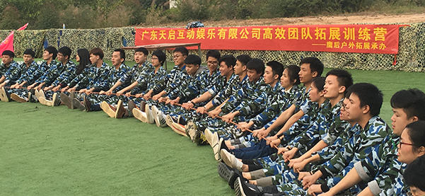
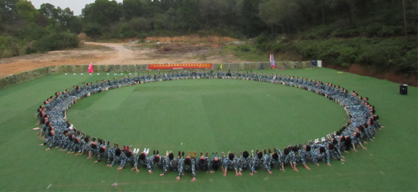

炎热的夏季悄然逝去，我们迎来了更具激情和挑战的金秋十月！ 毫无疑问，十月是激情的，是绚烂的，是催人奋进的！广东天 启互动 娱乐有限公司特举办了大型的拓展训练活动，在风景秀 丽的拓展基 地，二百名员工在培训师的指导和帮助下，完成了 一次次看似无法完 成的任务。
所有的拓展项目都在培训师的指导下有序地进行，训练课程有： 过河抽 板，泰山绳，七彩连环炮，解手链，盲人方阵，毕业墙。 所有的拓展项 目都在考验队员们相互配合和协作以及沟通能力， 培训师致力于发掘队 员们多向思维的能力，用游戏来让学员体 会日常工作中会出现的问题， 完成一个项目后一般都会做一个 总结，总结队员们在活动中的成功和 失败的关键点，队员们充 分体会到了没有凝聚力的团队就没有竞争力， 如果没有团队精 神，所有训练项目就无法完成，如果一个团队的组成人 员各行 其是，我行我素，工作就会难出成绩。相反，当这个团队面临艰 巨任务或遇到困难能坚定信心，同舟共济，就能顺利地到达胜利 的彼岸。 在拓展过程中，所有人员为团队完成训练科目发挥了重 要作用，正是由 于大家齐心协力，注重了细节，一丝不苟，才顺 利完成了任务。
充满欢乐和挑战的拓展活动在黄昏时分结束了，活动让队员们的距离 越来越近，彼此之间多了一份了解，多了一份亲切，多了一份友情。 通过拓展活动也使我们的团队成为一个真正能够发现问题、解决问题 的战 略团队，大家都各司其职、各负其职，在拓展活动中寻找合作的 黄金点， 不断形成一种默契，队员们提高了面对困难却能坚韧不拔的 决心，更可贵 的是锻炼了每个队员的合作精神。队员们都深深体会到 个人的力量那么渺 小，而团队的力量多么强大，所以一个人的成功不 能代表团队成功，只有 团队成员相互协作，互相配合，才能共同达成 目标。